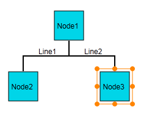
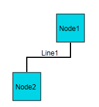

This feature allows you to delete a single node at a time from the diagram page in Essential Diagram for ASP.NET MVC.
Appearance and Structure
The following figures illustrate the appearance and funciton of the node deletion feature.

Figure 44: Before Node Deletion

Figure 45: After Node Deletion
Where do I find the installed samples?
To view the samples:
1. Open the Essential Diagram sample browser from the dashboard. (Refer to the Samples and Locations section).
2. Go to the Getting Started tab, and click Flat Diagram.
Properties
|
Property |
Description |
Type of Property |
Value it Accepts |
Dependencies |
|
AllowDelete |
Gets or sets a value indicating whether the node can be deleted. The default value is set to true.
|
Dependency property |
Boolean (true/false) |
No |
Enabling node deletion in Diagram MVC
This section guides you through the process of enabling Node deletion in a diagram. You can implement this feature in either one of the following two ways:
· Using builder
· Using properties model
 Using Builder
Using Builder